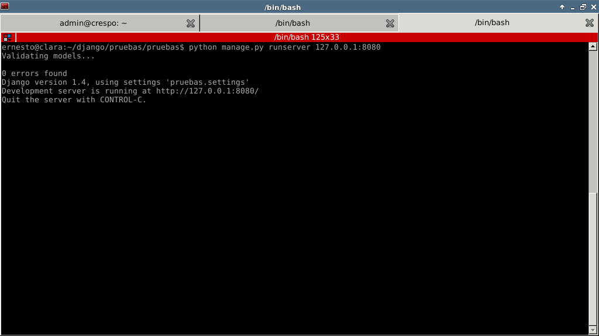
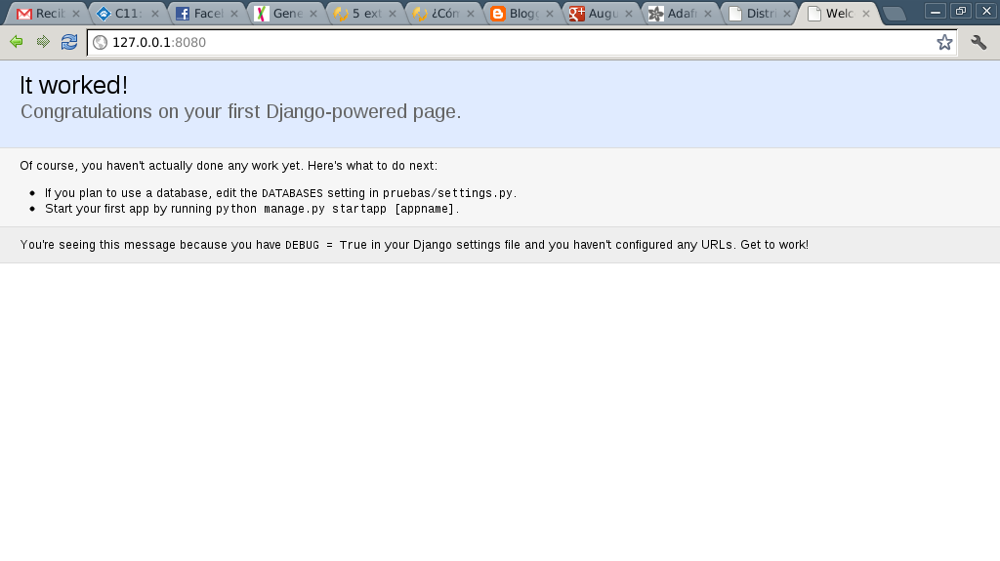

Framework de desarrollo web Django. Parte 1.
Posted on vie 06 julio 2012 in Tutorial Python • 2 min read
Django es un framework de desarrollo web hecho en python que usa el paradigma MTV, Modelo, template (plantilla) y Vista.
Para instalar django en Debian se puede hacer con apt-get:
apt-get install python-django
Si se desea instalar la última versión de Django se puede hacer con easy_install o por pip:
easy_install django
ó
pip install django
Luego de instalado django se procede a crear un proyecto:
django-admin startproject pruebas
Se crea el directorio pruebas.
Dentro de dicho directorio se tiene lo siguiente:
1. manage.py : Interfaz de línea de comando para las aplicaciones.
2. pruebas: Directorio del proyecto.
Dentro del directorio se tiene lo siguiente:
1. __init__.py : Define que es un paquete python.
2. settings.py : Archivo de configuración específico del proyecto.
3. urls.py : Configuración global de URLs.
4. wsgi.py : Configuración de WSGI para el proyecto pruebas.
El archivo settings.py contiene lo siguiente:
Habilita el modo debug para la aplicación web y la plantilla:
DEBUG = True
TEMPLATE_DEBUG = DEBUG
Se define el admin del proyecto:
ADMINS = (
('Ernesto Nadir Crespo Avila', 'ecrespo@gmail.com'),
)
Se define la base de datos a utilizar (se puede utilizar, mysql, postgresql, sqlite3 u oracle, con alguna extensión se puede usar mongodb ), con la configuración necesaria para conectarse a dicha base de datos:
DATABASES = {
'default': {
'ENGINE': 'django.db.backends.', # Add 'postgresql_psycopg2', 'mysql', 'sqlite3' or 'oracle'.
'NAME': '', # Or path to database file if using sqlite3.
'USER': '', # Not used with sqlite3.
'PASSWORD': '', # Not used with sqlite3.
'HOST': '', # Set to empty string for localhost. Not used with sqlite3.
'PORT': '', # Set to empty string for default. Not used with sqlite3.
}
}
Se define la zona horaria:
TIME_ZONE = 'America/Caracas'
Se define el idioma de la aplicación:
LANGUAGE_CODE = 'es-ve'
En otro artículo se continuará con la explicación de las opciones que tiene el archivo de configuración del proyecto en django.
Para iniciar el servidor de pruebas se ejecuta el siguiente comando:
Para iniciar un servidor web local.
python manage.py runserver 127.0.0.1
Si se desea usar una IP y un puerto específico.
python manage.py runserver ip:puerto
La figura muestra el servidor de pruebas de django en funcionamiento:

La siguiente figura muestra la página de inicio del servidor django en el navegador:

¡Haz tu donativo! Si te gustó el artículo puedes realizar un donativo con Bitcoin (BTC) usando la billetera digital de tu preferencia a la siguiente dirección: 17MtNybhdkA9GV3UNS6BTwPcuhjXoPrSzV
O Escaneando el código QR desde la billetera: